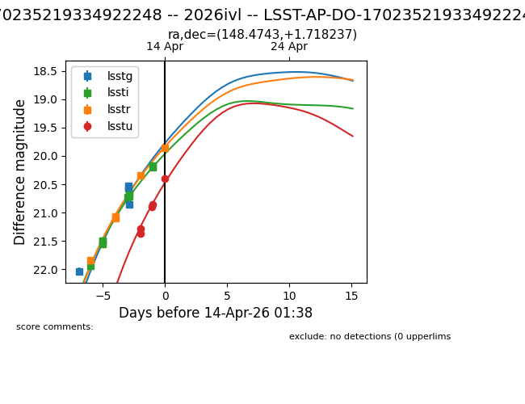
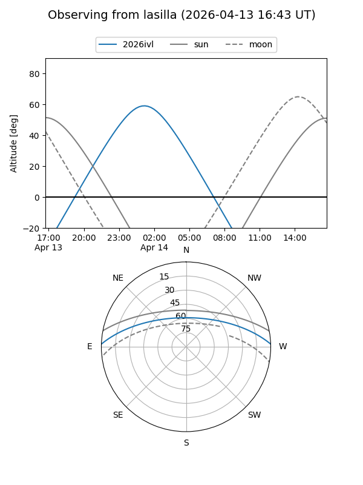
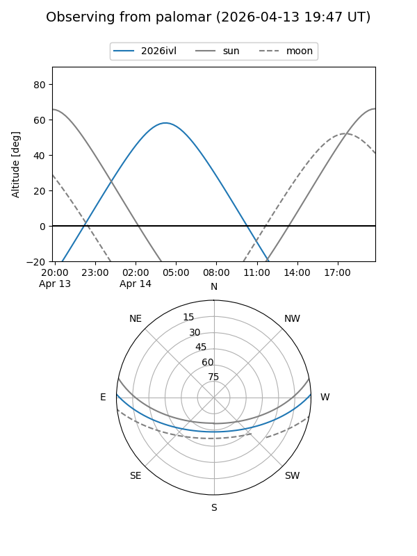
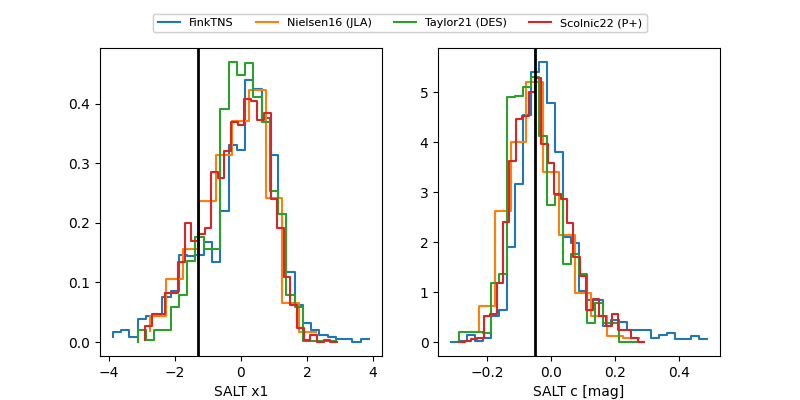

2026ivl
Target 2026ivl at 2026-04-14 01:47
Aliases and brokers:
TNS: link
YSE: link
alt names
LSST-AP-DO-170235219334922248 (lsst)
170235219334922248 (fink_lsst)
2026ivl (tns,yse)
Coordinates:
equatorial (ra, dec) = 148.4743,+1.71824
equatorial (HMS+DMS) = 09:53:53.83,+01:43:05.65
galactic (l, b) = (236.0887,+40.49784)
Flags:
Photometry:
last lsstg=20.86, lssti=20.17, lsstr=19.85, lsstu=20.40
5 lsstg, 8 lssti, 5 lsstr, 5 lsstu detections
Lightcurve

Visibility


Additional plots
